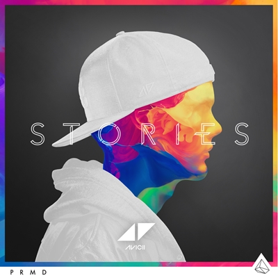

Avicii
37M seguidores
Músicas Populares
- Hey Brother
- Wake Me Up
- Levels
- Addicted to You
- The Nights
Álbuns

Tim

Stories
True
Playlists
- Summer Dance Hits
- This is Avicii
- All Out 2010s
Sobre Avicii
Tim Bergling (Estocolmo, 8 de setembro de 1989 — Mascate, 20 de abril de 2018), também conhecido pelo seu nome artístico Avicii (estilizado como ΛVICII ou pelo símbolo ◢◤, que representa as letras 'A' e 'V'), foi um DJ, produtor musical, cantor, compositor e multi-instrumentista sueco. Avicii foi classificado em terceiro lugar no ranking da lista anual Top 100 DJs da revista americana DJ Magazine em 2012 e 2013, além de ter sido nomeado duas vezes para o prêmio Grammy Awards, sendo uma vez no Grammy Awards 2012 na categoria "Melhor Gravação Dance" com sua música "Sunshine" em colaboração com David Guetta, e outra vez com no Grammy Awards de 2013 na categoria "Melhor Gravação Dance" com sua música "Levels".